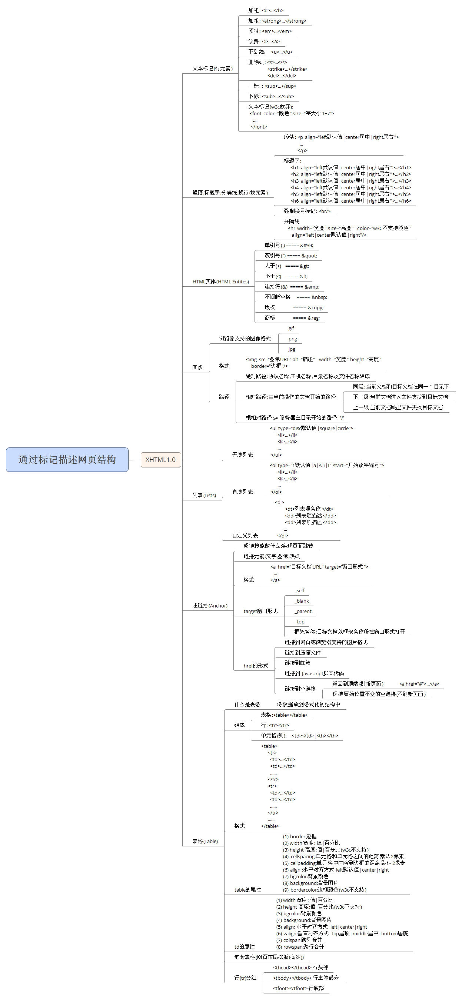

一.HTML实体(HTML Entites)
1.HTML实体：W3C规定在浏览器看到的特殊符号必须用HTML实体
单引号(') ===== '
双引号(") ===== "
大于(>) ===== >
小于(<) ===== <
连接符(&) ===== &
不间断空格 =====
版权 ===== ©
商标 ===== ®
二.图像
1.浏览器支持的图像格式
gif:支持动画，支持透明，支持256种颜色
png:不支持动画，支持透明，支持256种，1670万种，或更多。
jpg/jpeg:不支持动画，不支持透明，1670万种颜色
2.格式
<img src="图像URL" alt="描述" width="宽度" height="高度"border="边框"/>
说明:
a. img 标记 src alt属性必须写
b. 设置 宽度和高度不会影响图像的实际大小
3. 路径
(1)绝对路径:协议名称,主机名称,目录名称及文件名称组成
http://www.sohu.com/images/1.jpg
(2)相对路径:由当前操作的文档开始的路径
同级: 当前文档和目标文档在同一个目录下
<img src="1.jpg" alt=""/>
<img src="./1.jpg" alt=""/>
下一级:当前文档进入文件夹找到目标文档
<img src="images/2.jpg" alt=""/>
上一级:当前文档跳出文件夹找目标文档
<img src="../1.jpg" alt=""/>
(3)根相对路径:从服务器主目录开始的路径 '/'
<img src="/psd1608/1.jpg"/>
三.列表(Lists)
(1)无序列表
<ul type="disc默认值|square|circle">
<li>...</li>
<li>...</li>
...
</ul>
(2)有序列表
<ol type="1默认值|a|A|i|I" start="开始数字编号">
<li>...</li>
<li>...</li>
...
</ol>
(3)自定义列表
<dl>
<dt>列表项名称</dt>
<dd>列表项描述</dd>
<dd>列表项描述</dd>
...
</dl>
四.超链接(Anchor)
1.超链接能做什么:实现页面跳转
2.链接元素:文字,图像,热点
3.格式
<a href="目标文档URL" target="窗口形式">
...
</a>
4.target窗口形式
(1) _self ：默认值,目标文档以自身窗口形式打开
(2) _blank:目标文档以新窗口 形式打开
(3) _parent：目标文档以父级窗口形式打开
(4) _top：目标文档以顶级窗口形式打开
(5)框架名称:目标文档以框架名称所在窗口形式打开
5.href的形式
(1)链接到网页或浏览器支持的图片格式
a.网页
静态网页 .html .htm
动态网页(WEB程序开发语言):
.php .jsp .aspx .shtml .shtm
b. 浏览器支持的图片格式
.gif .png .jpg
(2)链接到压缩文件:用压缩命令或压缩软件将文件压缩，直接链接压缩文件名称即可。
(3)链接到邮箱：
<a href="mailto:11@163.com">...</a>
(4)链接到 Javascript脚本代码
<a href="javascript:js代码"></a>
(5)链接到空链接(空文档)
a.返回到顶端(刷新页面)
<a href="#">...</a>
b.保持原始位置不变的空链接(不刷新页面)
<a href="javascript:void(0)">...</a>
五.表格(Table)
1.什么是表格 ：将数据放到格式化的结构中
2.组成
(1)表格:<table></table>
(2)行: <tr></tr>
(3)单元格(列)： <td></td>|<th></th>
说明: 内容都写在单元格中
3.格式
<table>
<tr>
<td>...</td>
<td>...</td>
......
</tr>
<tr>
<td>...</td>
<td>...</td>
......
</tr>
......
</table>
4. table的属性
(1) border 边框
(2) width 宽度: 值|百分比
(3) height 高度:值|百分比(w3c不支持)
(4) cellspacing:单元格和单元格之间的距离 默认2像素
(5) cellpadding:单元格中内容到边框的距离 默认2像素
(6) align :水平对齐方式 left默认值|center|right
(7) bgcolor:背景颜色
(8) background:背景图片
(9) bordercolor:边框颜色(w3c不支持)
5. td|th 的属性
(1) width 宽度: 值|百分比
(2) height 高度:值|百分比(w3c不支持)
(3) bgcolor:背景颜色
(4) background:背景图片
(5) align: 水平对齐方式 left|center|right
(6) valign:垂直对齐方式 top居顶|middle居中|bottom居底
(7) colspan:跨列合并
(8) rowspan:跨行合并
6.嵌套表格(网页布局排版(淘汰))
7.行(tr)分组
(1) <thead></thead> 行头部
(2) <tbody></tbody> 行主体部分
(3) <tfoot></tfoot> 行底部
说明:
默认所有行都在 tbody标记中
